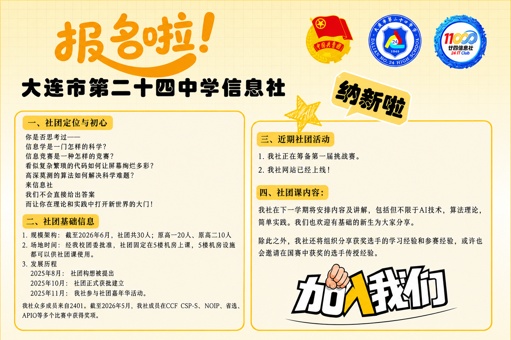

拔尖创新 || 大连市第二十四中学信息学竞赛在CSP-J/S2025中取得佳绩
在刘昊教练、周亚娟教练指导下，9人获提高级一等奖，修涵同学获辽宁省女子组第一名。
记录我们共同走过的每一步 — 从校园嘉年华到信息学竞赛赛场



展现你的算法与创意！比赛详情、规则及报名入口请点击右侧按钮。
以下是我校信息学竞赛团队在2025年CSP-J/S与NOIP中取得优异成绩后，学校官方公众号发布的报道。
在刘昊教练、周亚娟教练指导下，9人获提高级一等奖，修涵同学获辽宁省女子组第一名。
4人获辽宁省一等奖。